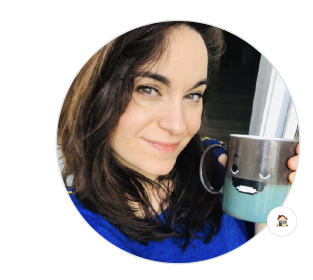
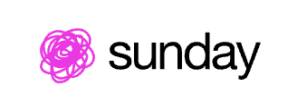
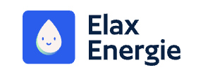
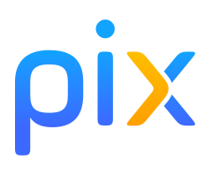
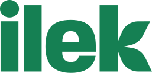

Recruteuse IT depuis 15 ans, j'interviens en RPO comme en mission au succès auprès de startups et de scale-up tech — du sourcing jusqu'à la signature, avec une exigence constante sur l'expérience candidat.
J'encaisse une charge importante de rendez-vous dans des contextes de scale-up où il faut délivrer vite et bien.
Expérience, agents IA et intelligence émotionnelle combinés pour amener les bonnes personnes dans le processus — tout le monde gagne du temps.
Rythme, culture du feedback, annonces détaillées et transparentes — je mets un point d'honneur à soigner chaque étape du parcours candidat.
J'accompagne le changement et l'amélioration continue par l'immersion dans les équipes et l'audit — le freelancing comme démarche d'impact, pas de temps facturé.
RPO — j'opère comme un bras armé recrutement intégré à votre équipe, sur la durée.
— ou bien —
Mission au succès — engagement ponctuel sur un ou plusieurs postes identifiés.
Build — conception, amélioration et audit de votre process de recrutement.
— et / ou —
Delivery — sourcing et chasse dans le dur, jusqu'au closing.
L'univers tech, principalement pour des startups et des scale-up en forte croissance.




Je réponds généralement sous 24h.
Sourcing, matching assisté par IA et conduite d'entretiens — outillés du premier contact jusqu'à l'offre.
J'échange et je partage avec deux communautés professionnelles.